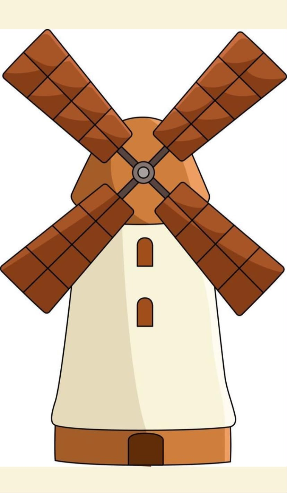

<!-- Gambar -->


<map name="image-map">

    <!-- TURBIN ANGIN = BALING-BALING KIRI -->
    <area target="_blank"
          alt="Pengertian Turbin Angin"
          title="Pengertian Turbin Angin"
          href="https://id.wikipedia.org/wiki/Turbin_angin"
          coords="136,84,68,150,7,210,7,224,286,469,301,470,380,407,380,386,205,163"
          shape="poly">

    <!-- MENARA = BAGIAN BAWAH -->
    <area target="_blank"
          alt="Pengertian Menara"
          title="Pengertian Menara"
          href="https://id.wikipedia.org/wiki/Menara"
          coords="148,646,680,1232"
          shape="rect">

    <!-- KINCIR ANGIN = LINGKARAN TENGAH -->
    <area target="_blank"
          alt="Pengertian Kincir Angin"
          title="Pengertian Kincir Angin"
          href="https://id.wikipedia.org/wiki/Kincir_angin"
          coords="414,499,35"
          shape="circle">

</map>